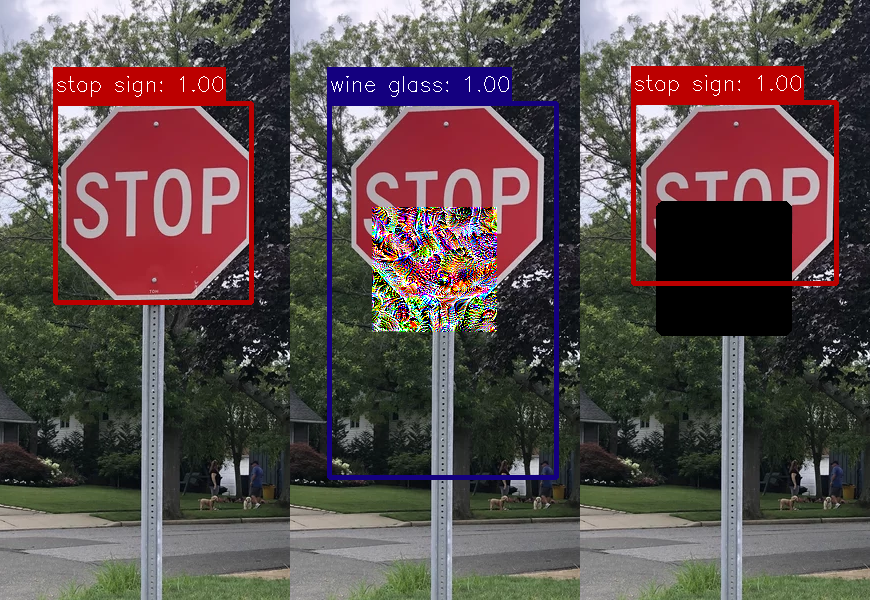
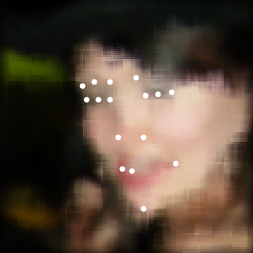
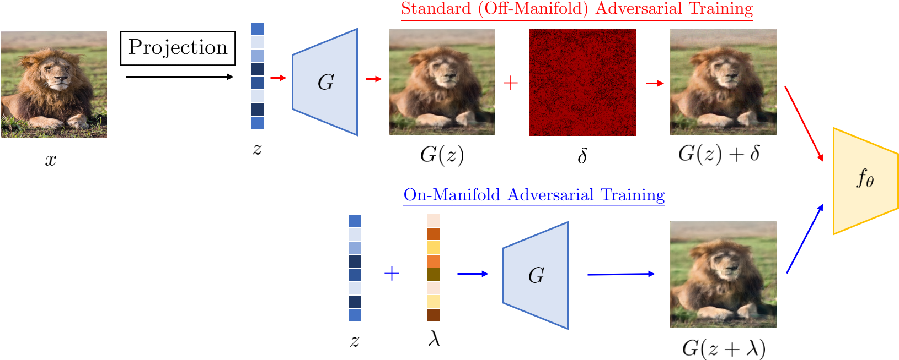
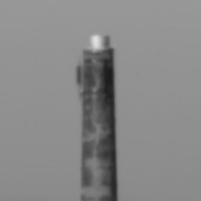
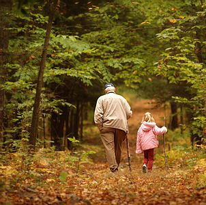

劉俊邦
Assistant Professor, School of Data Science
City University of Hong Kong
I received my Ph.D. from Johns Hopkins University in 2021, under the supervision of Prof. Rama Chellappa. I obtained my B.Sc. and M.Phil. from CUHK, and M.S. from the University of Maryland. I was a postdoctoral fellow at MINDS, JHU. My research focuses on developing robust and reliable computer vision algorithms.
Research Interests
News
Selected Publications

@inproceedings{liu2022segment,
title={Segment and Complete: Defending Object Detectors against Adversarial Patch Attacks with Robust Patch Detection},
author={Liu, Jiang and Levine, Alexander and Lau, Chun Pong and Chellappa, Rama and Feizi, Soheil},
booktitle={Proceedings of the IEEE/CVF Conference on Computer Vision and Pattern Recognition},
year={2022}
}@article{lau2021atfacegan,
title={ATFaceGAN: Single Face Semantic Aware Image Restoration and Recognition from Atmospheric Turbulence},
author={Lau, Chun Pong and Castillo, Carlos and Chellappa, Rama},
journal={IEEE Transactions on Biometrics, Behavior, and Identity Science},
year={2021},
publisher={IEEE}
}
@article{lau2021semi,
title={Semi-Supervised Landmark-Guided Restoration of Atmospheric Turbulent Images},
author={Lau, Chun Pong and Kumar, Amit and Chellappa, Rama},
journal={IEEE Journal of Selected Topics in Signal Processing},
year={2021},
publisher={IEEE}
}
* Equal contribution
@inproceedings{lin2020dual,
title={Dual Manifold Adversarial Robustness: Defense against Lp and non-Lp Adversarial Attacks},
author={Lin, Wei-An and Lau, Chun Pong and Levine, Alexander and Chellappa, Rama and Feizi, Soheil},
booktitle={Advances in Neural Information Processing Systems},
year={2020}
}@inproceedings{lau2020atfacegan,
title={ATFaceGAN: Single Face Image Restoration and Recognition from Atmospheric Turbulence},
author={Lau, Chun Pong and Souri, Hossein and Chellappa, Rama},
booktitle={IEEE International Conference on Automatic Face and Gesture Recognition},
year={2020},
note={Oral + Honorable Mention Award}
}
@article{lau2019restoration,
title={Restoration of atmospheric turbulence-distorted images via RPCA and quasiconformal maps},
author={Lau, Chun Pong and Lai, Yu Hin and Lui, Lok Ming},
journal={Inverse Problems},
volume={35},
number={7},
pages={074002},
year={2019},
publisher={IOP Publishing}
}
@article{lau2019variational,
title={Variational models for joint subsampling and reconstruction of turbulence-degraded images},
author={Lau, Chun Pong and Lai, Yu Hin and Lui, Lok Ming},
journal={Journal of Scientific Computing},
volume={78},
number={3},
pages={1488--1525},
year={2019},
publisher={Springer}
}@article{lau2018image,
title={Image retargeting via Beltrami representation},
author={Lau, Chun Pong and Yung, Chun Pang and Lui, Lok Ming},
journal={IEEE Transactions on Image Processing},
volume={27},
number={12},
pages={5787--5801},
year={2018},
publisher={IEEE}
}